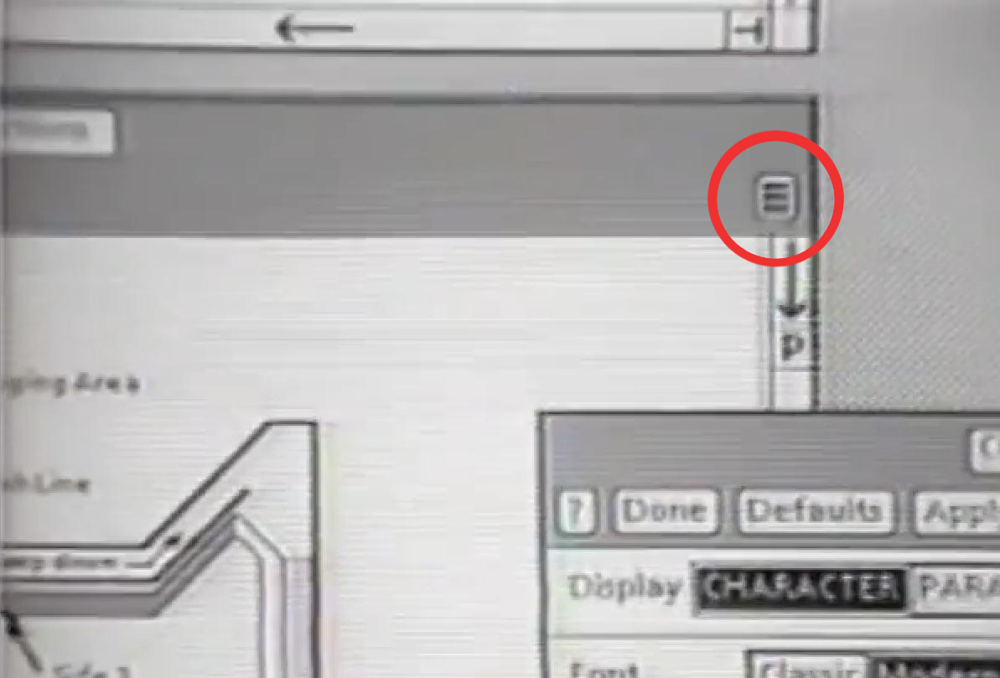
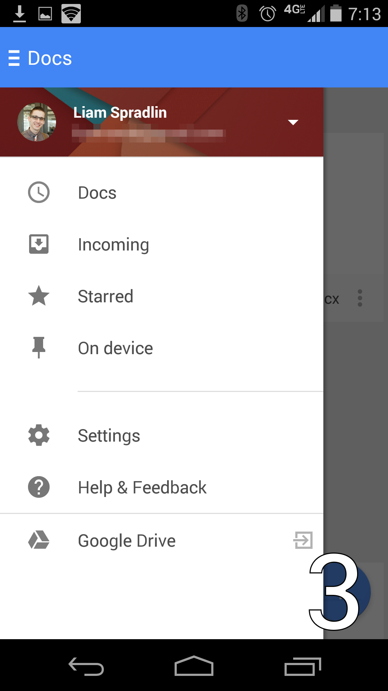

This presentation is on the history of the hamburger icon.

The hamburger icon consists of three parallel horizontal lines and is named for its resemblance to the layers of a hamburger.
Burger comes from the Xerox "Star" personal workstation, one of the earliest graphical user interfaces. Its designer, Norm Cox, was responsible for the entire system's interface, including the icons that would effectively communicate functionality to the earliest computer users. The hamburger, which looks like a list, seemed like a good way to remind users of a menu list.
The hamburger icon is placed in the top left or top right of a graphical user interface.
Selecting (tapping or clicking) this button results in a menu being revealed (sliding out or popping up), which distinguishes it from a menu bar, which is always on display
People use this icon as a graphical shortcut originated in order to save space on smaller devices (like smartphones). On a smaller surface, designers have better leverage on laying out the hamburger icon because it is more visible in relation to the elements around it.
A hamburger menu only displays navigational headings and selections when users actively click on the symbol. Otherwise, it’s a discreet, almost invisible icon usually located at the top left or right of a site—mobile or desktop. Websites have to utilize bigger space in order to carefully lay out elements to prioritize how visitors absorb information. This example allows the user to focus on the site's value proposition as well as the call to action button of "subscribe"
Many applications have incorporated the hamburger icon into their designs in order to create utimate functionality while staying out of the user's way
There are many different hamburger styles that exist but all perform the same function of hiding information from the main elements of the interface.
In terms of design, the lines of the icon can be rounder than others or they can even be three dots.

There is a great deal of conflicting evidence as to whether the hamburger icon is useable as an indication of a menu. Some designers argue that the icon is easily recognized by a younger demographic, others suggest that an older demographic recognizes it if web-literate. The only conclusion that we can really draw from this evidence is that usability tests have proved inconclusive, with parallel tests often returning conflicting results.
Possibly the best option is to incorporate multiple UI elements that take advantage of both the cleanliness of a navigational drawer, along with the usability of other alternatives. Oftentimes apps still have a bunch of features that users occasionally want, but not often enough to feature on the homescreen. Having an app drawer combined with other navigational elements gives users the best of both worlds. Facebook is a good example. Within their navigational tabs, they include a hamburger menu as a tab to access all their other features.
People say the‘hamburger’ icon is a problem because it conceals content from users. This is said to be non-UX friendly as it can have users forgetting to execute actions they would usually have had the content been placed right in front of them instead of hidden. The design itself is three lines. If you are not mobile literate, you might not even realize that means a menu.
One of the biggest downsides to using a hamburger menu is that it doesn’t showcase an app’s features very well. 25% of apps get deleted after first use, suggesting that many apps aren’t quick enough to demonstrate the value they’ll provide in users’ lives. Hiding those features in a navigation drawer such as the hamburger makes them difficult to discover and forces users to go searching for them.

Out of sight, out of mind. If it wasn’t important enough to be put on the home screen, it must not be that important
The top left of a phone screen is generally reserved for meta information (name of device, wifi indicator, back navigational button, apps running in the background, battery life, search, etc.). It’s not a core section of the screen like the center (where your eyes naturally fall) or at the bottom (which are the easiest spots to reach with your fingers). Naturally, the implied message is that things at the top of the screen are to be glanced at, not clicked on.
Minimalism in web design has been an ongoing trend over the past few years and continues to go strong. With an increased focus on simplicity and ease of navigation. Depending how you want to lay out information, the hamburger icon can be your best friend.
The hamburger menu helps get everything tucked away neatly. This keeps users from getting distracted from the core functions that you want your users to see. It’s only a problem if you want users to actually use the features within the hamburger menu.
The hamburger allows for direct access, which means that allows a user to access a “preferred item, instead of forcing users to go through your content in serial order.” -Nielsen Norman Group. This means that users can click directly to the pages they want, instead of having a preset order that they must process before getting to the desired screen.
It’s very difficult to get widespread adoption of a UI icon. Aside from the home button, the mouse pointer, the print logo, and power buttons, how many do you know? Even seemingly innocuous icons such as the star or the heart icons can have a wide range of different interpretations. For some apps they might mean bookmarking a page or post for later reference, while in others they may just signify a like, which users may be hard pressed to find later on. As a result, these and many other icons can be difficult to interpret precisely when using new apps.
The hamburger icon is easily scaleable and it fits cleanly into a pixel grid. It was originally a list icon that has been press-ganged into its current role, but since a menu is simply a list of options, it’s semantically correct to use the list item in this way.